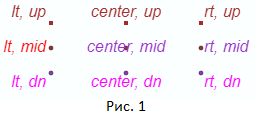
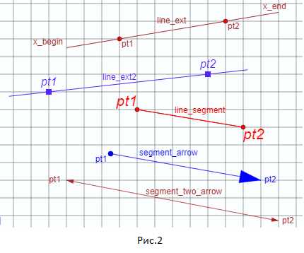
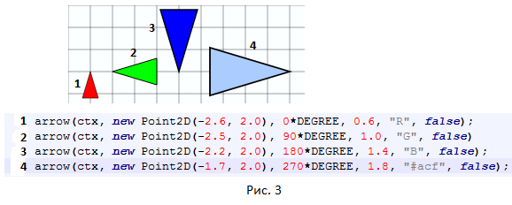
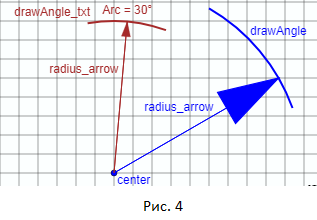

Справочник по функциям canvas2D
Общие замечания по параметрам функций
Во всех функциях:
ctx - контекст рисования
width - толщина линии
color - цвет линии или текста
R - красный цвет
G - зеленый цвет
B - синий цвет
В некоторых функциях:
Black - черный цвет
Gray - серый цвет
DarkOrchid - пурпурный цвет
Также цвет можно задавать явно. Например: "#A2BC89"
Преобразование координат
function fx(x), function fy(y)
Функции fx(x) и fy(y) используются для преобразования
значений координат холста x и y, заданных в системе
координат используемых в библиотеке функций WebGeometry
(в дальнейшем будем использовать для нее обозначение WG),
в значения координат холста x_canvas и y_canvas принятых
в HTML5 Canvas.
function fx(x)
{
var x_canvas = x * SCALE + xC;
return x_canvas;
}
function fy(y)
{
var y_canvas = - y * SCALE + yC;
return y_canvas;
}
Значения SCALE, xC и yC изначально задаются программистом.
Эти значения являются глобальными переменными сразу для всей программы отображения.
В процессе работы программы их можно (при желании) изменять при помощи мыши или клавиатуры.
SCALE - задает масштаб отображения координат в WG в координаты холста HTML5 Canvas.
xC - задает в пикселах по оси OX положение начала координат в системе WG.
yC - задает в пикселах по оси OY положение начала координат в системе WG.
Отображение координатных осей и сетки
function axes(ctx, dx, dy, width, color)
Функция отображает оси OX и OY на холсте
dx и dy - размеры осей по X и Y
width - толщина линий осей
color - цвет линий осей
function grid(ctx, n_hor, n_vert, step, width, color)
Функция отображает сетку на холсте
n_hor - количество делений сетки по горизонтали
n_vert - количество делений сетки по вертикали
step - шаг сетки
width - толщина линий сетки
color - цвет линий сетки
Отображение точек
function rsp(ctx, point, size, color)
Отображение точки в виде квадрата
point - координаты точки в формате Point2D (система координат WG)
size - размер точки в пикселах
color - цвет точки
function csp(ctx, point, size, color)
Отображение точки в виде окружности
point - координаты точки в формате Point2D (система координат WG)
size - размер точки в пикселах
color - цвет точки
Отображение текста

text(ctx, str, point, align, baseline, color, font)
Отображение текстовой строки.
str - текстовая строка
point - координаты точки задают положение текстовой строки str.
align - смещение текста по горизонтали относительно точки point.
Параметр align может принимать значения "lt", "center", "rt".
baseline - смещение текста по вертикали относительно точки point.
Параметр baseline может принимать значения "up", "mid", "dn".
В отличие от функций text1 и text2 в этой функции нет дополнительного
смещения положения текста относительно положения point.
Это смещение совпадает (но не по названию параметра) со значением
смещения текста задаваемого в функции fillText HTML5 Canvas.
На рисунке 1 показано как использовать значения "up", "mid", "dn", "lt", "center", "rt".
text1(ctx, str, point, align, baseline, color, font)
Отображение текстовой строки.
В отличие от функции text в данной функции text1 введено дополнительное
смещение положения текста относительно положения задаваемого точкой point.
str - текстовая строка
point - координаты точки задают положение текстовой строки str.
align - смещение текста по горизонтали относительно точки point.
Параметр align может принимать значения "lt", "center", "rt".
baseline - смещение текста по вертикали относительно точки point.
Параметр baseline может принимать значения "up", "mid", "dn".
На рисунке 1 показано как использовать значения "up", "mid", "dn", "lt", "center", "rt".
text2(ctx, str, point, align, baseline, color, font)
Отображение текстовой строки.
В отличие от функции text в данной функции text2 введено дополнительное
смещение положения текста относительно положения задаваемого точкой point.
Но величина этого смещения больше, чем величина соответствующего смещения в функции text1.
str - текстовая строка
point - координаты точки задают положение текстовой строки str.
align - смещение текста по горизонтали относительно точки point.
Параметр align может принимать значения "lt", "center", "rt".
baseline - смещение текста по вертикали относительно точки point.
Параметр baseline может принимать значения "up", "mid", "dn".
На рисунке 1 показано как использовать значения "up", "mid", "dn", "lt", "center", "rt".
roundNumber(num, places)
Форрмирование заданного числового представления.
Используется для вывода чисел на экран.
Функция возвращает форматированное значение числа num.
num - исходное число
places - задает количество цифр в возвращаемом значении
Отображение прямых и отрезков

function line_ext(ctx, pt1, pt2, x_begin, x_end, width, color)
Отображение прямой проходящей через точки pt1 и pt2.
Отображение прямой начинается с точки имеющей значение координаты X равное x_begin
и заканчивается в точке имеющей значение координаты X равное x_end.
Данную функцию целесообразно использовать для отображения на чертеже выносных линий.
function line_ext2(ctx, pt1, pt2, kf, width, color)
Отображение прямой проходящей через точки pt1 и pt2.
Прямая простирается дальше точек pt1 и pt2 в обе стороны.
Параметр kf определяет величину протяженности прямой за точки pt1 и pt2.
Данную функцию целесообразно использовать для отображения на чертеже выносных линий.
function line_segment(ctx, pt1, pt2, width, color)
Отображение отрезка прямой от точки pt1 до точки pt2 сплошной линией.
function line_segment_dash(ctx, pt1, pt2, width, color).
Отображение отрезка прямой от точки pt1 до точки pt2 пунктирной линией
function segment_arrow(ctx, pt1, pt2, width, scale, color)
Отображение отрезка прямой от точки pt1 до точки pt2 сплошной линией
со стрелкой в точке pt2.
function segment_two_arrow(ctx, pt1, pt2, width, scale, color)
Отображение отрезка прямой от точки pt1 до точки pt2 сплошной линией
со стрелками в точках pt1 и pt2.
Данную функцию целесообразно использовать для отображения на чертеже размерных линий.
Отображение треугольника/стрелки

function arrow(ctx, point, ang, scale, color, direction)
Отображение треугольника (стрелки) в точке point.
ang - задает угол наклона треугольника (стрелки).
Угол ang отсчитывается от оси OY по часовой стрелке,
если direction = true или direction = undefined.
И против часовой стрелки, если direction = false.
scale - размер/масштаб треугольника (стрелки).
Параметр scale просто определяет некоторый масштаб изображения треугольника.
При значении scale = 1.0 треугольник (стрелка) не масштабируется по величине.
function arr(ctx, point, angle, scale)
Вспомогательная функция для отрисовки острия стрелки.
angle - наклон острия стрелки
scale - размер/масштаб острия стрелки
Отображение дуг

function draw_angle(ctx, point, angle_begin, angle_end, radius, width, color)
Отображение отрезка дуги с радиусом заданным с учетом величины значения масштабирования SCALE.
point - точка задающая центр дуги
angle_begin - начальный угол дуги
angle_end - конечный угол дуги
Вращение (отсчет углов) осуществляется против часовой стрелки.
function draw_angle_txt(ctx, point, angle_btgin, angle_end, radius, str, align, baseline, width, color, font)
Отображение отрезка дуги с радиусом заданным с учетом величины значения масштабирования SCALE.
Рядом с дугой отображается текст заданный программистом.
str - текст сопровождающий дугу
point - точка задающая центр дуги
angle_begin - начальный угол дуги
angle_end - конечный угол дуги
Вращение (отсчет углов) осуществляется против часовой стрелки.
function radius_arrow(ctx, center, radius, angle, width, scale, color)
Отображение отрезка со стрелкой имеющий длину равную величине radius.
Отрезок начинается в точке point и располагается под углом angle к оси OX.
scale - задает размер стрелки на конце отрезка.
Отображение окружностей и эллипсов
function circle(ctx, point, radius, width, color)
Отображение окружности с центром в точке point с радиусом radius.
function drawEllipse(ctx, x, y, a, b, width, color)
Отображение эллипса с центром в точке с координатами (x, y) в системе WG.
a и b - размеры полуосей эллипса.
function drawEllipse2(ctx, point, a, b, width, color)
Отображение эллипса с центром в точке point.
a и b - размеры полуосей эллипса.
Отображение многоугольников
function draw_polygon_line(ctx, points, width, color)
Отображение замкнутого контура проходящего через массив точек points
color - цвет линий контура
function draw_polygon(ctx, points, width, color, facet_color)
Отображение закрашенного контура проходящего через массив точек points
color - цвет линий контура
facet_color - цвет закраски полигона лежащего внутри контура
width - толщина линии окаймляющей многоугольник.
Если значение этого параметра меньше 0, то линия окаймляющая многоугольник не проводится.
function fill_polygon(ctx, points, n, facet_color)
Отображение закрашенного многоугольника имеющего n вершин в массиве points.
Эта функция подобна функции draw_polygon, но без проведения линий окаймляющих полигон.
facet_color - цвет закраски полигона
n - количество вершин полигона